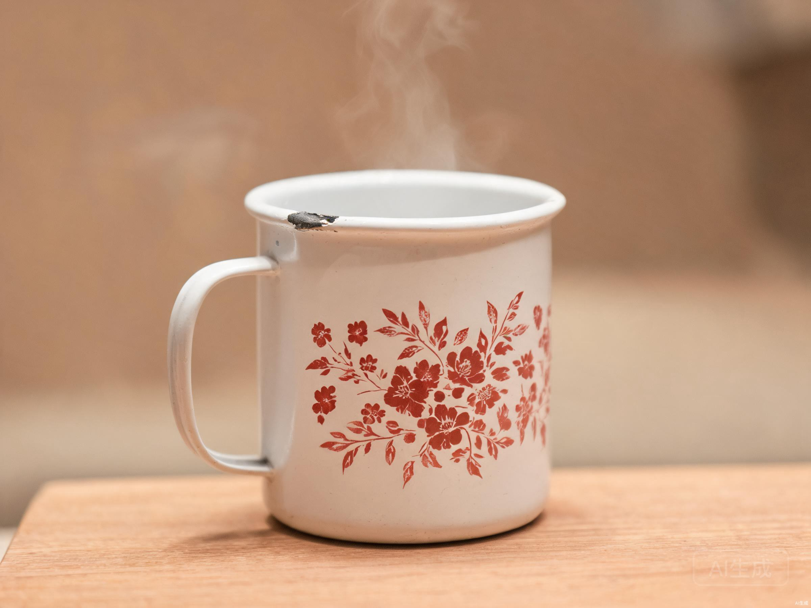

妈妈—01搪瓷杯
70年代 · 外婆陪嫁 · 讲述者 林雯
故事摘要
"一杯热水，三十年。杯口缺了一小块瓷，是表哥小时候磕的。外婆没舍得换，说缺口也是日子的一部分。"
三层记忆
它是什么
一只白底红花的搪瓷杯，外婆 70 年代的陪嫁，跟了她快五十年。
发生过什么
杯口那小块缺口，是表哥小时候贪玩磕的。外婆没舍得换，说缺口也是日子的一部分。
对我意味着什么
它装的不只是热水，是一家人围坐时那句"慢点喝，别烫着"。
语音导览
点击收听 30 秒导览
0:28
默认静音，需手动开启
留给参观者的一句话
你希望别人看见这件物品的哪一面？
2 / 4 · 下一站：老照片相册
继续参观